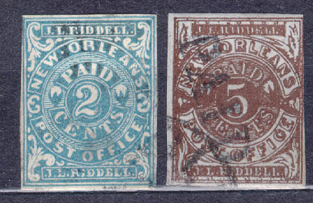
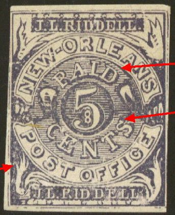
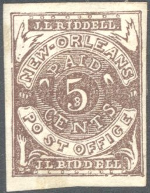
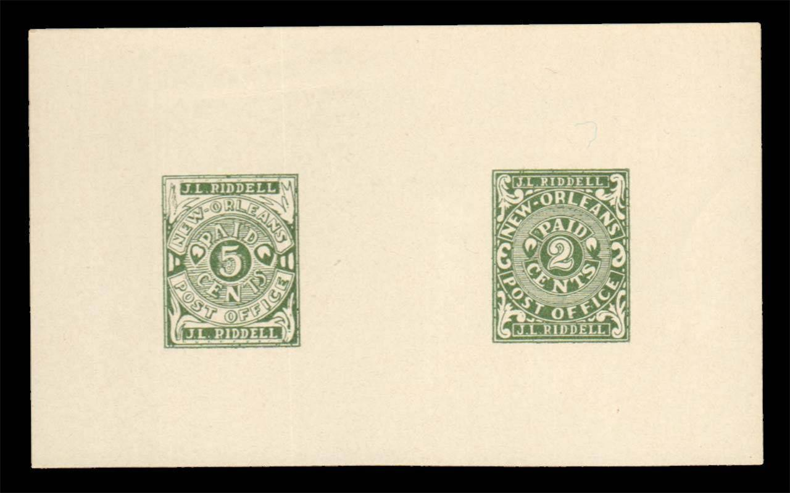
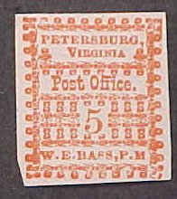
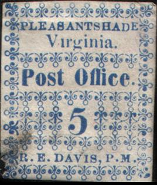
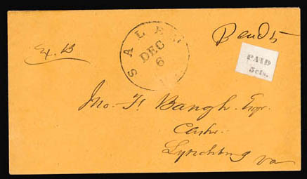
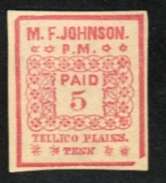
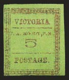
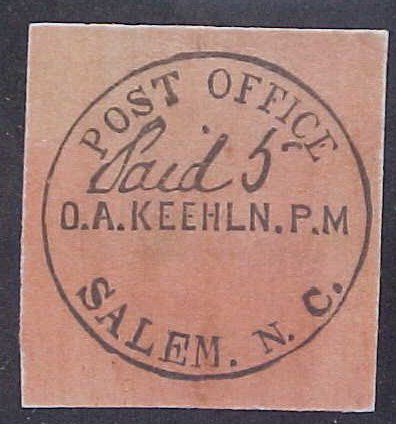

Return To Catalogue - locals Athens - Greenville - locals Greenwood - Marion - locals Memphis - Nashville - Conf. States, general issues - Confederate States Bogus Locals - United States
Note: on my website many of the
pictures can not be seen! They are of course present in the
catalogue;
contact me if you want to purchase it.
Local issues in the Confederate States were issued in (1861): Athens, Baton Rouge, Beaumont, Bridgeville, Charleston, Danville, Emory, Fredericksburg, Galatin, Gollad, Gonzales, Greenville, Greenwood, Grove Hill, Halletsville, Helena, Independence, Jetersville, Kingston, Knoxville, Lenoir, Livingston, Lynchburg, Macon, Marion, Memphis, Mobile, Mt. Lebanon, Nashville, New Orleans, New Smyrna, Petersburg, Pittsylvania Court House, Pleasant Shade, Rheatown, Salem, Spartanburg, Tellico Plains, Uniontown and Victoria. Information on forgeries and bogus issues can be found on http://www.rfrajola.com/csa/csaindex.htm or at http://members.home.com/kr.baker/csa/fakes/ (Kevin Baker) or at http://www.jlkstamps.com/webpage/index1.htm

1861 inscription "New Orleans POST OFFICE J.L.RIDDELL" 2 c blue 2 c red 5 c brown 5 c brown on blue 5 c red 5 c red on blue
Forgeries exist, examples, see also http://members.home.com/kr.baker/csa/fakes/ (Kevin Baker's site, with thanks to Kevin for letting me use some of his images).
First forgery:
The above forgeries must be the ones mentioned in Album weeds, there should be a dot between "NEW" and "ORLEANS" and not a "-" as in this stamp. Furthermore, in the genuine stamps, the "O" of "ORLEANS" is not filled in as it is here.
Taylor forgeries:
(Taylor forgery)
This is a forgery made by Taylor. The "EW" of "NEW" should touch the oval, but it doesn't in this stamp (see blue arrows in aobove picture for details). The ornament just above the "P" of "POST" is a dot, but it should be a triangle. The ornaments above the first "L" of "RIDDELL" are not as in the genuine stamps. The white circle below the tip of the "2" is complete and not broken as in the genuine stamps. There is a large serif at the top of the "S" of "CENTS". The ornament in the lower right corner doesn't have coloured lines in it and finally there is no dot behind "RIDDELL". I've also seen this forgery in the color blue. Other sources say that this forgery was made by Upham.

(Taylor forgery of the 5 c)
Another Taylor forgery of the 5 c is shown above. The ornament at the left bottom has four small leaves, all spread apart. There is no thin arched line between the circle and the word "PAID". Finally, the word "CENTS" has a very large serif at the top of the "S".
Another forgery with the "2" too thin. Also note the
"W" of "NEW". This forgery also exists in
blue color.
Another forgery with the "2" too thick. And a very
dubious item.
Upham forgeries:

(Upham forgeries)
The above stamps are Upham counterfeits, there is a big space between the "O" and the "S" of "POST" (see the red arrows in the picture on the right hand side). The 'S' leans too far to the right. The left upper ornament is touching the label with 'J.L. Riddell', in the genuine stamp it doesn't. The ornament in the lower left corner looks like a hand, it's therefore called the 'waving hand forgery'. The thin leaf at the bottom doesn't touch the circle above it. The ornament at the right upper corner had four small leaves pointing upwards. Finally, there is no thin arched line between the circle and the word "PAID".
It appears that these 5 c forgeries were modelled after an
illustration in the Moens catalogue (Les
Timbres-Poste Illustres' by J.-B.Moens 1864, Plate 29), the
'hand' is present, although in the Moens illustration, there is
no big space between the "O" and the "S" of
"POST". The 2 c in the Moens catalogue also has a long
"-" in between "NEW" and "ORLEANS".
Another forgery type
5 c lilac forgery, reduced size. There is no '8' inside the '5'.
This forgery exists in many colors, orange on yellow, red, brown,
lilac, red on blue.

Supposedly two reprints in green color of both values, but the
design is slightly different from the genuine stamps.
A bogus New Orleans stamps 20 c lilac with the portrait of
Washington. I've also seen this forgery in blue and red colors.
(Sorry, no picture available yet, if anybody possesses a picture, please contact me!)
5 c black 10 on 5 c black
(Genuine, images obtained from a Siegel auction)
Images obtained from a Siegel and from a Harmers auction; note
the inversion of the ornaments to the left and right bottom side
of the '5' in the first two above types.
5 c red
10 different types exist of this stamp (the stamp was printed in sheets of 10, two rows of 5 stamps).
Forgeries:

All the above stamps are forgeries, the row of trefoils above "W.E.BASS,P.M" should point in the other direction (according to Album Weeds, however one of the genuine stamps from the Siegel auction has this as well; Position 5 of the sheet points upwards in the genuine stamps). In the genuine stamps, the letters of the word "PETERSBURG" are larger than those in the word "VIRGINIA".
There are also some bogus issues, with "PostOffice PETERBURG C.S.A."; I've seen 10 c green and 10 c red.
Inscription 'Paid 5 CENTS J.P. JOHNSON P.M.'
5 c red
Simioar stamps but with "W.D.COLEMAN" were issued for Danville
I presume this stamp is not genuine; maybe it is a so-called
George Van den Berg forgery? The design is very similar to the
illustration in 'Le Timbre Poste' of Moens No. 146, page 11 of
February 1875; "PAID" is in capital letters, there is
no dot behind "CENTS" etc. Often, but not always, the
"T" of "CENTS" if broken. This forgery type
also exists in bogus colors: green, blue, red on yellow, red on
blue.
(genuine, image obtained from a Siegel auction)
5 c blue
The Pleasant Shade stamps were derived from the Petersburg stamps, by replacing the name of the town and postmaster and printing the stamps in blue instead of red. Forgeries exist of this stamp.

Forgery; in my view the '5' is different. Also 'PLEASANTSHADE' is
written as one word. Other forgeries exist.
(Bogus issue)
(Genuine, reduced size, image obtained from a Siegel auction)
5 c red
Forgeries exist, example:
Other stamp that I do not quite trust:
"Rheatown, Tenn" is not written entirely in capital
letters!

5 c black
(Image obtained from a Siegel auction)
(Genuine on letter, reduced sizes, images obtained from a Siegel
auction)
5 c black 5 c black on blue
The '5' was printed seperately in these stamps.
(Reduced size, genuine, images obtained from a Siegel auction)
5 c red 10 c red
I've seen the 5 c and 10 c printed together.
Forgery:

(Genuine, reduced sizes, images obtained from a Siegel auction
and http://www.webuystamps.com/provision.htm )
2 c green on grey 5 c green 5 c green on grey 10 c red on grey 10 c green on grey
I've seen bogus 20 c stamps in the above design: 20 c green, 20 c red, 20 c red on yellow, 20 c grey, 20 c black on green, 20 c black on yellow.
Bogus 20 c red
A badly printed block of four 2 c blue
'facsimiles' exists. It has written in blue text on the backside:
"This is a FACSIMILE of the POSTMASTER'S PROVISIONALS
2-cent Uniontown, Alabama, Block. C.S.A. Scott's No.86A2 This
block was pictured in the LIFE MAGAZINE of May 23, 1954, with a
catalog price of $12,500.00. It was formely owned by Mr. J.
Hubert Scruggs, Jr., of Birmingham, Alabama and was donated by
him to the Boys Town PhilaMatic Center, Boys Town, Nebr., where
it is now on exhibition."

5 c red 10 c red
(wrong colours, forgeries!)
Examples:
(Galveston Tex Paid 10 and Paid 5, no city name, probably both
forgeries)
(Genuine Galveston cover, image obtained from a Siegel auction)

(Forgery of an envelope from Salem N.C.)
Zoom - ins of the above envelope, probably genuine
5 c blue on different colours (envelopes)
(forgery?)
{kind=link}
{kind=link}
{kind=link}
{kind=link}
{kind=link}
{kind=link}
{kind=link}